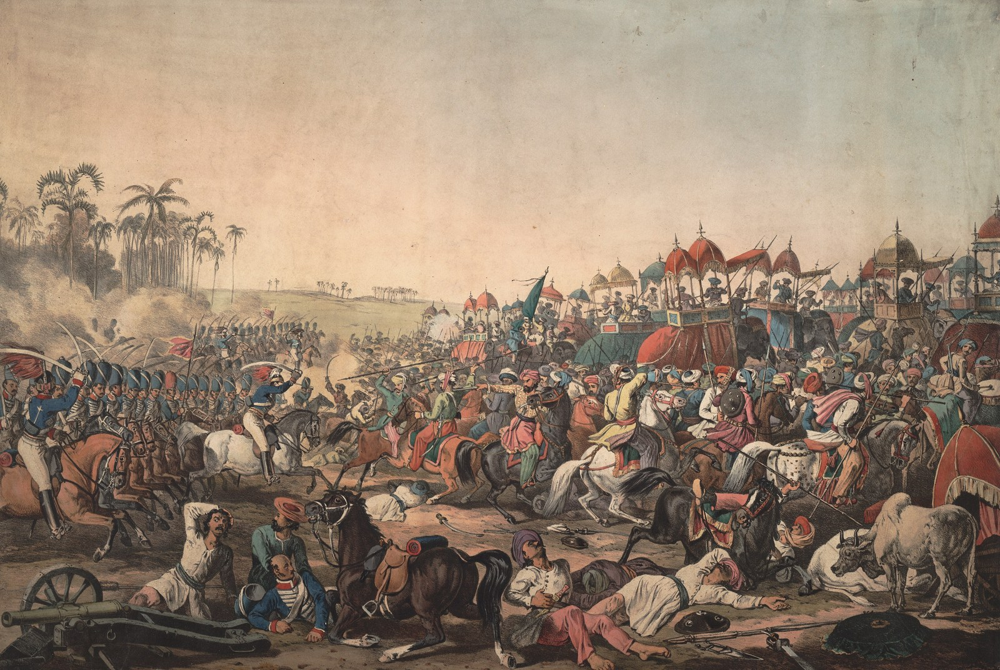

The Pindaris and the third Anglo-Maratha war
A campaign against freebooting horsemen became the war that ended the Peshwa’s government, fought at Khadki, Koregaon and Ashti.

In the autumn of 1817 the Governor-General, the Marquess of Hastings, assembled some 120,000 men in two armies, the Grand Army from Bengal and the Army of the Deccan under Sir Thomas Hislop, to hunt down the Pindaris. These were bands of irregular cavalry, loosely attached to Scindia and Holkar, who lived by raiding across central India and had lately struck into Company territory on the Coromandel coast. Their leaders, Amir Khan, Karim Khan and Chitu, were to be dispersed and the Maratha states made to renounce them.
The Peshwa Bajirao II, resentful since the Treaty of Poona in June 1817 had stripped him of further territory and of his agent Trimbakji Dengle, chose this moment to break with the Company. On 5 November 1817 his army under Bapu Gokhale, reckoned at some 28,000 horse and foot, attacked the small subsidiary force at Khadki outside Pune, after burning the Residency at the Sangam. The Company’s 3,000 men held and the Marathas withdrew. At Koregaon on the Bhima on 1 January 1818 a detachment of about 800 under Captain Staunton, largely sepoys of the Bombay Native Infantry, held a village for a day against a much larger force and the Peshwa’s army moved off. At Ashti, near Pandharpur, on 20 February 1818 General Smith’s cavalry broke the Peshwa’s rearguard and Gokhale was killed; the accounts differ on whether the action fell on 19 or 20 February. Bhonsle of Nagpur was defeated at Sitabuldi in November and Holkar at Mahidpur on 21 December 1817.
By the spring of 1818 the Pindaris had scattered, Amir Khan had been bought off with Tonk, and the Maratha houses had accepted new treaties. The Peshwa was still at large, but his state had ceased to exist.
In the story
The third war brought the last independent Maratha field armies into contact with the Company and dispersed them. It also dealt with the Pindaris, who represented an older Deccan pattern in which armed horsemen attached themselves to whichever power would license their raiding. Hastings’s settlement left no such space. Every chief was tied by treaty, every band suppressed or pensioned. The plural military market of the Deccan, in which Bahmani sultans, Vijayanagara, Mughals and Marathas had all recruited, closed.
In the map collection
Carey and Lavoisne, Geographical, Historical, and Statistical Map of India (1820) · Vandermaelen, Bejapoor – Asie 102 (1827)
In the chronology
- 1817–1818The Pindari campaign merges into the Third Anglo-Maratha War: Kirkee (5 November 1817), Sitabuldi at Nagpur (26–27 November), Mahidpur against Holkar (21 December), Koregaon (1 January 1818) and Ashti (20 February) break the remaining centres of armed resistance.
Sources
- Randolf G. S. Cooper, The Anglo-Maratha Campaigns and the Contest for India: The Struggle for Control of the South Asian Military Economy (Cambridge University Press, 2003)
- Stewart Gordon, Marathas, Marauders, and State Formation in Eighteenth-Century India (Oxford University Press, Delhi, 1994)
- Stewart Gordon, The Marathas 1600–1818 (The New Cambridge History of India, II.4) (Cambridge University Press, 1993)